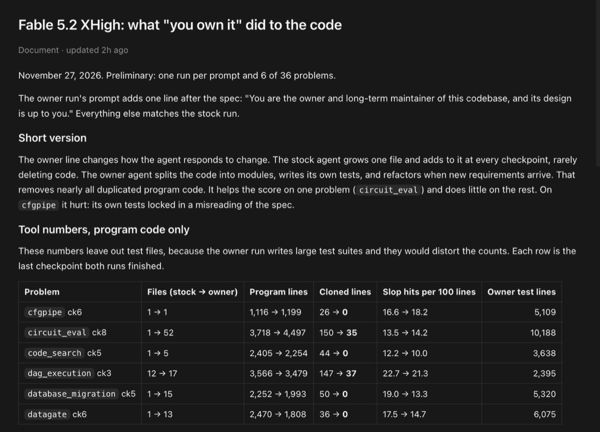
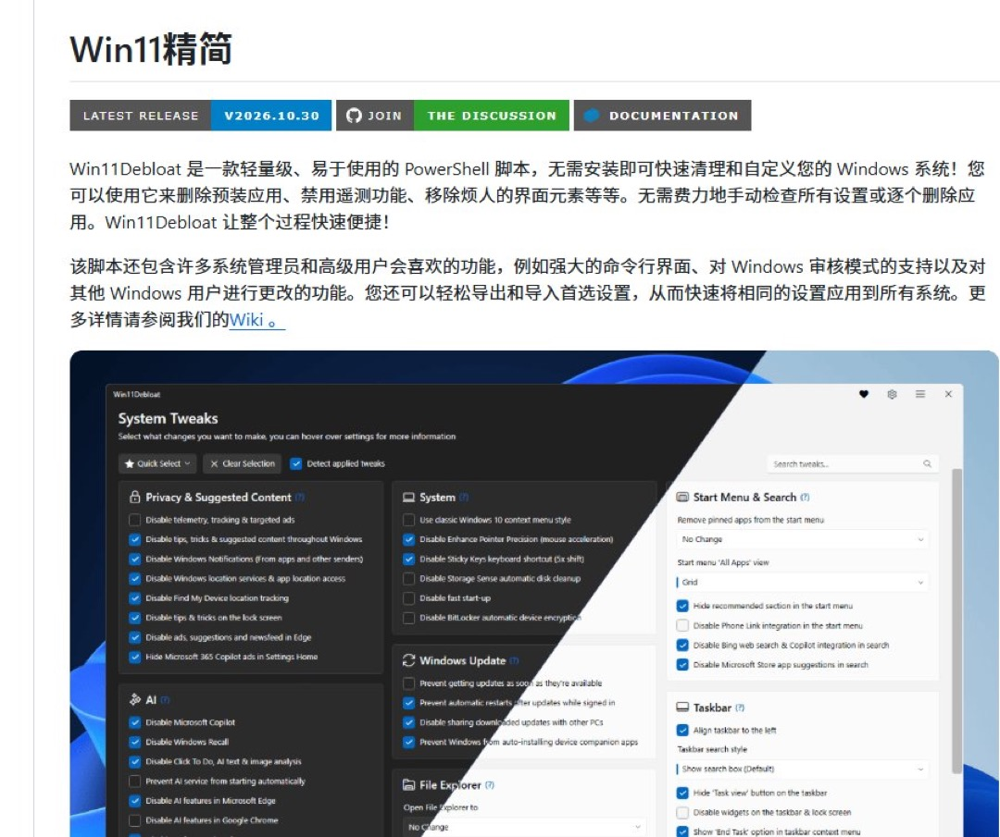
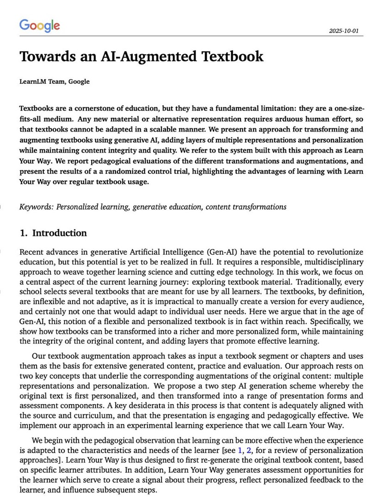

本期速览
01 PraisonAI 一站式多 Agent 编排框架
06 Qwen4-Max 正式版长线决策超越 Opus 5.5
07 PageIndex 用树形目录替代向量检索
08 Claude 归属提示词减少重复代码
10 Google Learn Your Way 将 PDF 转为互动课程
01｜PraisonAI 一站式多 Agent 编排框架
来源（X） · @ai_suxiaole · 2026-11-28 10:00
PraisonAI：GitHub 9.4K Star，MIT 开源，README 标注累计下载 200 万+
以前做多 Agent，分工、交接、记忆、审批全得自己写，现在一个框架全包：
多 Agent 协作：顺序、并行、路由、循环、任务交接
模型：100+ 大模型，每个 Agent 可以单独指定
记忆：持久记忆 + RAG 知识库
聊天机器人：Telegram、Discord、Slack、WhatsApp
MCP：22 个客户端、85 个工具
沙箱：Docker、E2B 隔离执行
做 AI 自动化的兄弟们，先收藏，用到再翻
GitHub：https://github.com/MervinPraison/PraisonAI
02｜MangoDisk 开源跨平台磁盘清理工具
来源（X） · @shenxiankk · 2026-11-28 10:12
给大家推荐开源项目 MangoDisk（芒果磁盘清理），macOS、Windows、Linux 三个系统都支持。
它的功能覆盖得很全：系统垃圾、浏览器缓存、Xcode 和 Docker 缓存都能深度清理，大文件、重复文件、卸载残留也能一并找出来。
最给力的是，连本地 AI 模型缓存、开发项目构建产物这类占空间的大头都能扫描到！
另外还自带磁盘空间可视化、CPU/内存监控、启动项管理、隐私清理，以及 AI 解读功能。
扫描默认是只读模式，删除之前都要你确认，避免误删重要文件。
Mac 用户、程序员、电脑空间告急的，建议收藏！
GitHub：https://github.com/harry0703/MangoDisk
03｜animation-principles 将动画法则拆为 Agent Skill
来源（X） · @dapeng667 · 2026-11-28 19:37
它把迪士尼的 12 条动画法则拆成了 144 个 Agent Skill，等于给 AI 一本动效手册
每条不只讲原则，还附了代码和具体参数。按钮按下去缩放多少、过渡动画持续多少毫秒，都有明确数值
全套共 12 大类。别一次全装，会占满上下文。按项目需要挑三到五个，放进 Claude Code 或 Cursor 就行：
- 纯网页项目：css-native
- React 项目：framer-motion（React 动效库）
- 复杂动画：gsap-greensock（JS 动画库）
- 打磨按钮手感：buttons-ctas
- 想要轻快的弹跳效果：joy-delight
每个 Skill 是一个独立的 SKILL.md 文件，采用 MIT 协议开源。AI 生成的动效太僵硬的话，挑几个装上试试
项目地址：https://github.com/dylantarre/animation-principles
04｜Kimi 蒸馏让 Qwen 支持老挝语翻译
来源（X） · @alacheng · 2026-11-28 15:46
这套方案，其实对做小语种翻译应用团队是个好的学习方案。
热门小模型 Qwen3.8-27B 在老挝语翻译任务上几乎失效。当要求它把英文翻译成老挝语时，它经常输出泰语（近亲语言，但文字完全不同）。
在标准测试集 FLORES-200 上，它的 chrF++ 得分只有 5.5，输出中只有约 11% 是老挝语文字；而更大的 Kimi-K3.1-Pro 能拿到 47.5 分。
引用内容
Together AI @togethercompute
中文译文
原文
05｜OpenShelf 把 GitHub 应用搬上电视
来源（X） · @FFEE_2025 · 2026-11-27 21:08
它把 GitHub 上的开源电视应用整合成电视端商店：约 3,000 款应用、18 个分类，全程遥控器操作。自动识别电视 CPU 架构挑对 APK；搜索框直接输入 GitHub 仓库地址就能装，还能保持更新；手机扫码搜索、远程安装、传 APK；更新自动检查、可批量更新，更新前验签名，安装前能看 VirusTotal 扫描结果。
支持 Android TV、Google TV、Fire TV 和其他 Android 6+ 设备，简繁中文界面都有。电视上装 Downloader 输代码 3399820 即可安装它。开源免费（GPL-3.0），上线三周已 878 Star。
GitHub：https://github.com/wingedpanther/openshelf
#AndroidTV #智能电视 #开源项目 #电视应用 #GitHub
06｜Qwen4-Max 正式版长线决策超越 Opus 5.5
来源（X） · @lxd87257936 · 2026-11-28 12:50
前脚刚放出的 Qwen4-Max 预览版还被吐槽“雷声大雨点小”，不少人甚至怀念上一代的 Qwen 3.8。结果昨天
StealthMark 实测榜单刚出，正式版 Qwen4-Max 直接原地起飞，全线暴涨。
最夸张的是在极其考验长线规划和临场决策的 Roguelike 游戏测试里，它居然直接把顶级旗舰 Opus 5.5 给挑落马下了。
因为目前还没开源权重，只能走 API 测试，再加上之前预览版把大家预期拉低了，这波静悄悄的暴涨很多人根本没注意到。
你测过正式版的 Qwen4-Max 了吗，实际体感比预览版强多少？
07｜PageIndex 用树形目录替代向量检索
来源（X） · @Suercha007 · 2026-11-28 13:53
PageIndex，它不建向量索引，也不切块。它给每份文档建一棵树，本质是一份给 LLM 看的目录：每个节点带标题、起止页码，还有一段摘要。检索的时候让模型顺着这棵树往下走，像人翻一份长报告那样，先看目录，再翻到那一节。
灵感来自 AlphaGo，理由是相似不等于相关。向量检索给你的是「像」，但你要的是「对」。长文档里真正能回答问题的段落，措辞往往跟你问的那句话一点都不像。
树的骨架是从文档版式里抽出来的，根本没让 LLM 参与。LLM 只负责给节点写摘要、精修结构。所以建索引用个便宜模型就够，把好模型留给检索。
最近的版本中，他们把 OCR 整个删了，直接读原始页面。准确率反而升了，成本还降了。同时上线的 Page Search API 号称把文档问答的 token 成本砍掉 97%。
当然肯定有缺点，开源版只适合文本密集的 PDF，多模态、集合、文件夹、MCP Server 这些都在 Cloud 版。
https://github.com/VectifyAI/PageIndex
08｜Claude 归属提示词减少重复代码
来源（X） · @Steven_computer · 2026-11-28 09:45
Anthropic 在 Claude Fable 5.2 的官方 prompting guide 里写了这么一条：在 prompt 里加一句 "You are the owner and long-term maintainer of this codebase, and its design is up to you."（你是这个代码库的主人和长期维护者，设计由你定。）
他们的测试数据：不加这句，模型把重复代码合并成一个函数的比例不到 10%；加了，大约 75%。
为什么一句话差这么多？
我的理解是：agent 默认把自己当"外包"。代码是别人的，最安全的做法就是别动原来的结构，往旁边加。每一轮都"最小改动"，单看都没错，攒十轮就是一堆复制粘贴。Anthropic 原文也是这么描述的：不说归属、或者说代码是别人的，它就倾向于在现有结构上堆，哪怕是重复的。
说白了，你告诉它"以后还是你来维护"，它的目标就从"把这次的活交了"变成了"别给以后的自己挖坑"。
@dexhorthy 今天就拿这句话在 SlopCodeBench 上测了一把。（SlopCodeBench 是 @GOrlanski 团队做的 benchmark：需求一轮一轮加，agent 要在自己之前写的代码上继续改，专门看代码会不会越改越烂。）
初步结果，他自己强调只跑了 36 题里的 6 题、每种 prompt 各一次：
- 加了 owner 这句，6 题里有 4 题复制粘贴的代码直接降到 0
- circuit_eval 这题：普通版写出 3 份几乎一样的电路求值逻辑，通过 4/8；owner 版抽了一个统一接口，8/8，中途还把自己写的一个包删了（-729 行）重来
- 但 cfgpipe 这题反而更差：owner 版自己写了 5000 多行测试，结果这些测试把它对需求的一个误读锁死了
这个反直觉的点我觉得最值钱。
我们一直说"让 agent 写测试、跑验证"是好习惯。但测试只能证明代码符合 agent 的理解，证明不了理解是对的。它第一天读错了需求，再写一堆测试，错的行为就被当成"对的"守起来了。主人意识越强，越会守护自己的设计，包括错的那部分。
还有两个代价 Anthropic 自己也写了：
- 输出 token 多 70–80%，还会做没人要的改动（新测试、文档，有时甚至改了已有功能的行为），最后的总结经常漏掉小改动
- 你在前面写"不要顺手重构"压不住它，测试里一半以上的情况它还是会去合并
所以我的用法是：
- 你自己的项目、要长期迭代 → 加这句
- 别人的代码、只想修一个 bug → 别加
- 加了之后看 diff，别只看它的总结
- 核心功能的验收标准由你从需求出发来定，别让它自己出题自己判卷
我感觉这句话真正改的不是"代码质量"，而是 agent 看问题的时间跨度。没人告诉它还有明天，它就只为今天交差。
你让 agent 维护的项目，它知道自己"明天还在"吗？
出处：
@dexhorthy 原帖 https://x.com/dexhorthy/status/2126446998543118515
Anthropic 官方文档《Prompting Claude Fable 5.2》 https://platform.claude.com/docs/en/build-with-claude/prompt-engineering/prompting-claude-fable-5-2
引用内容
dex @dexhorthy
中文译文
一些来自我的 SlopCodeBench（由 @GOrlanski 及其团队评估）的有趣早期结果，围绕我最大的疑问：
当你告诉 fable 5.2“你拥有这个代码库，并将长期在其中工作时”，代码质量会发生什么变化
这个提示技巧来自 anthropic 官方的 fable 5.2 提示指南。一些有趣的行为：
1) 与仅仅要求功能相比，它确实减少了代码重复，并导致编写了更多测试
2) 它在其中一个简单挑战上提高了分数（目前 campaign 还处于早期阶段）
3) 至少在一个案例中，早期编写的测试锁定了不良行为，导致随着时间推移性能变差，相比之下，使用标准的“只构建功能”提示（不带所有权那句话）表现更好
原文
some fun early results from my SlopCodeBench (eval by @GOrlanski and team) on my biggest question:
what happens to code quality when you tell fable 5.2 "you own this codebase and will be working in it over time"
this prompt tip comes from anthropic's official fable 5.2 prompting guide. some interesting behavior:
1) it definitely reduces code duplication compared to just asking for features, and results in more tests being written
2) it improved scores on one of the easy challenges (still early in the campaign here)
3) in at least one case, the tests written early locked in bad behavior that caused worse performance over time, compared to the stock "just build the feature" prompt without the ownership line

09｜Win11Debloat 一键清理 Win11 预装与 AI 功能
来源（X） · @0xGky · 2026-11-28 05:20
有人鼓捣出一套开源的 PowerShell 脚本，GitHub 上星星一路攒到 63K+；名也不图、利也不图，就收拾一摊事：Win11 里那些卸又卸不掉、关又关不灭、成天硌应人的货色，一把给它扫干净。
1️⃣ 预装软件、推广插件，成批清走
2️⃣ 遥测、广告ID、个性化追踪，全部切断
3️⃣ Copilot、Recall、Click to Do这类AI功能，连根拔掉
4️⃣ Bing网页搜索、Edge内嵌AI，统统封死
5️⃣ 顺手还能把Win10那套经典右键菜单找回来
MIT 开源，白用，不捆不绑，背后也不偷偷瞄你。
顶扎心的一笔在这儿：微软折腾了这么些年，把 Windows 活活做成广告口、搜索口、AI 口；可这脚本一行命令砸下去，它又给打回一台老实机器的模样。
🔗 https://github.com/Raphire/Win11Debloat

10｜Google Learn Your Way 将 PDF 转为互动课程
来源（X） · @HeLi8866 · 2026-11-28 02:27
Google Research 打造了一套名为 Learn Your Way 的学习系统，由 LearnLM 和 Gemini 驱动。
它能够将静态的 PDF 教材重新构建，变成适合每个学生的个性化互动课程。
整个过程是怎么实现的？⬇️
首先，AI 会询问你的年级，以及你真正感兴趣的东西，比如体育、音乐、美食。
然后在保留核心知识的前提下，重新调整教材的难度，并将那些枯燥的通用案例替换成你感兴趣的内容。
比如，同样是学习牛顿运动定律，喜欢篮球的孩子可以通过投篮来理解，喜欢赛车的孩子则可以通过汽车加速来理解。
接下来，系统引入了认知科学中的「双重编码理论」。
简单来说，当大脑通过文字、图像等不同形式理解同一个知识点时，更容易建立牢固的认知和记忆。
借助多个专用 AI Agent 和针对教育插图微调的模型，一份枯燥的 PDF 教材可以被转化成 5 种学习形式：
・沉浸式阅读：将复杂内容拆解成容易理解的小节，搭配定制插图。
・互动幻灯片：自带语音讲解和填空练习，边学边练。
・动态思维导图：自由缩放，从知识全貌深入到具体细节。
・章节测验：根据答题结果，实时定位学生的知识盲区。
・音频课堂：模拟老师与学生之间的对话，通过提问和讲解帮助理解知识。
为了验证这种学习方式到底有没有用，谷歌在芝加哥招募了 60 名年龄在 15～18 岁的学生，进行了一场随机对照实验。
两组学生都有 40 分钟的时间学习有关青少年大脑发育的知识。
一组使用传统 PDF 教材，另一组使用 Learn Your Way。
▸ 实验结果相当亮眼：
→ 即时测试成绩：AI 学习组高出约 9 个百分点。
→ 3～5 天后的记忆测试：AI 学习组得分 78%，传统教材组只有 67%。
→ 考试信心：AI 学习组达到 100%，传统教材组为 70%。
→ 93% 的学生表示，未来还愿意继续使用这套 AI 学习系统。
除此之外，教育专家还对历史、物理等不同学科的 AI 改编教材进行了评估，在内容准确性、知识覆盖度和学习科学原则等维度，平均评分均达到 0.85 以上（满分为 1）。
体验地址： https://learnyourway.withgoogle.com
传统教科书最大的局限，就是用同一套内容、同一种讲解方式，去教育无数个截然不同的孩子。
过去几百年，我们只能大规模生产标准化教材。
而 AI 让大规模生产个性化教材成为了可能。
以前，是学生努力适应教科书。
以后，可能是教科书主动适应每一个学生。

11｜Eleven v4 Turbo 语音延迟约 150ms
来源（X） · @ElevenLabsDevs · 2026-10-21 01:23
中文译文
表现力与速度兼备，约 150ms。Eleven v4 Turbo：REST、流式传输和 SDK——用一个 model_id 即可切换模型。
原文
Expressiveness meets speed at ~150ms. Eleven v4 Turbo: REST, streaming and SDKs — switch models with one model_id.